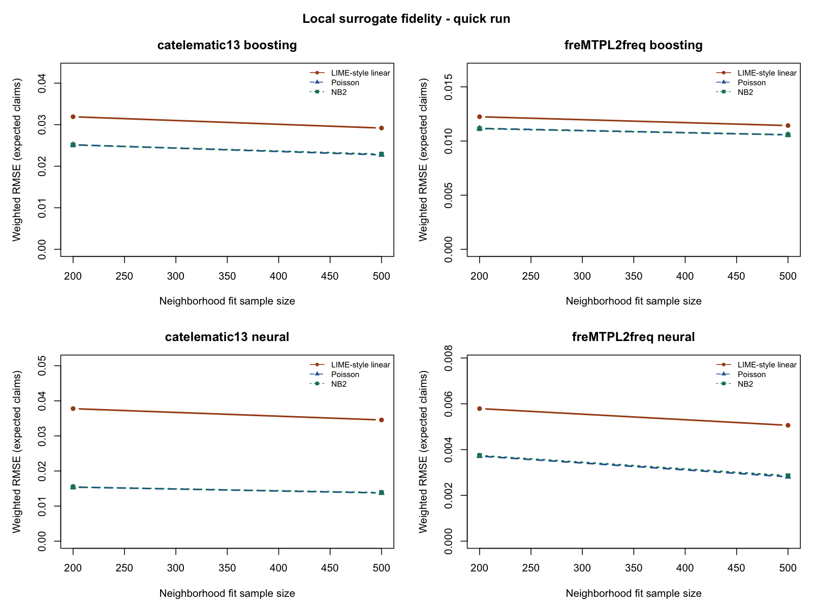

Mode: quick; seed: 456; NB2 alpha: 1; ridge: 1e-04.
This is an executed experiment, not a claim that any method is universally better. Quick/smoke runs verify the workflow and use subsamples. Full runs are available in the runner. Uncertainty across policies needs more anchors and repeated model-training seeds.
| dataset | original_rows | invalid_rows_removed | negative_model_year_ages_retained | analyzed_rows | claim_total | exposure_years | zero_claim_fraction | predictors | training_rows | validation_rows | test_rows | encoded_features |
|---|---|---|---|---|---|---|---|---|---|---|---|---|
| catelematic13 | 100000 | 0 | 1942 | 10000 | 465 | 8608.523 | 0.9558 | 20 | 7000 | 1500 | 1500 | 41 |
| freMTPL2freq | 677991 | 0 | 0 | 10000 | 385 | 5224.924 | 0.9629 | 9 | 7000 | 1500 | 1500 | 41 |
Blackboxes are evaluated against observed counts on the test split. The constant-rate baseline is estimated only from training data.
| dataset | model | count_rmse | count_mae | poisson_deviance | observed_claims | predicted_claims | observed_annual_frequency | predicted_annual_frequency |
|---|---|---|---|---|---|---|---|---|
| catelematic13 | constant_rate | 0.25108 | 0.09817 | 0.33806 | 88 | 67.45013 | 0.06822 | 0.05229 |
| catelematic13 | boosting | 0.24392 | 0.09150 | 0.28897 | 88 | 64.93398 | 0.06822 | 0.05034 |
| catelematic13 | neural | 0.24474 | 0.08954 | 0.30470 | 88 | 63.83642 | 0.06822 | 0.04949 |
| freMTPL2freq | constant_rate | 0.21498 | 0.07976 | 0.27107 | 67 | 59.35403 | 0.08331 | 0.07380 |
| freMTPL2freq | boosting | 0.21440 | 0.07860 | 0.26560 | 67 | 58.39047 | 0.08331 | 0.07260 |
| freMTPL2freq | neural | 0.21497 | 0.08014 | 0.27499 | 67 | 60.98120 | 0.08331 | 0.07582 |
Surrogates match blackbox expected counts at fixed anchor exposure. Evaluation donor rows are excluded from every local fit. Means first average repeated neighborhoods within each anchor, then average anchors equally. Lower RMSE is better.

| dataset | model | neighborhood_size | method | rmse | weighted_rmse | anchor_absolute_error | negative_prediction_fraction | n_anchors |
|---|---|---|---|---|---|---|---|---|
| catelematic13 | boosting | 200 | lime_linear | 0.03219 | 0.03190 | 0.03895 | 0.11111 | 3 |
| freMTPL2freq | boosting | 200 | lime_linear | 0.01250 | 0.01224 | 0.01022 | 0.00000 | 3 |
| catelematic13 | neural | 200 | lime_linear | 0.03852 | 0.03778 | 0.02603 | 0.17556 | 3 |
| freMTPL2freq | neural | 200 | lime_linear | 0.00587 | 0.00579 | 0.00232 | 0.02311 | 3 |
| catelematic13 | boosting | 500 | lime_linear | 0.02942 | 0.02918 | 0.03341 | 0.09911 | 3 |
| freMTPL2freq | boosting | 500 | lime_linear | 0.01163 | 0.01143 | 0.00932 | 0.00000 | 3 |
| catelematic13 | neural | 500 | lime_linear | 0.03516 | 0.03455 | 0.02682 | 0.16844 | 3 |
| freMTPL2freq | neural | 500 | lime_linear | 0.00512 | 0.00506 | 0.00217 | 0.02622 | 3 |
| catelematic13 | boosting | 200 | nb2 | 0.02513 | 0.02513 | 0.02936 | 0.00000 | 3 |
| freMTPL2freq | boosting | 200 | nb2 | 0.01138 | 0.01114 | 0.00828 | 0.00000 | 3 |
| catelematic13 | neural | 200 | nb2 | 0.01556 | 0.01542 | 0.00601 | 0.00000 | 3 |
| freMTPL2freq | neural | 200 | nb2 | 0.00387 | 0.00374 | 0.00176 | 0.00000 | 3 |
| catelematic13 | boosting | 500 | nb2 | 0.02283 | 0.02289 | 0.02541 | 0.00000 | 3 |
| freMTPL2freq | boosting | 500 | nb2 | 0.01075 | 0.01057 | 0.00768 | 0.00000 | 3 |
| catelematic13 | neural | 500 | nb2 | 0.01398 | 0.01383 | 0.00743 | 0.00000 | 3 |
| freMTPL2freq | neural | 500 | nb2 | 0.00294 | 0.00286 | 0.00157 | 0.00000 | 3 |
| catelematic13 | boosting | 200 | poisson | 0.02518 | 0.02516 | 0.02930 | 0.00000 | 3 |
| freMTPL2freq | boosting | 200 | poisson | 0.01140 | 0.01117 | 0.00829 | 0.00000 | 3 |
| catelematic13 | neural | 200 | poisson | 0.01558 | 0.01542 | 0.00601 | 0.00000 | 3 |
| freMTPL2freq | neural | 200 | poisson | 0.00385 | 0.00372 | 0.00176 | 0.00000 | 3 |
| catelematic13 | boosting | 500 | poisson | 0.02268 | 0.02273 | 0.02498 | 0.00000 | 3 |
| freMTPL2freq | boosting | 500 | poisson | 0.01076 | 0.01058 | 0.00770 | 0.00000 | 3 |
| catelematic13 | neural | 500 | poisson | 0.01393 | 0.01375 | 0.00746 | 0.00000 | 3 |
| freMTPL2freq | neural | 500 | poisson | 0.00290 | 0.00281 | 0.00156 | 0.00000 | 3 |
Spearman feature-importance correlation and top-5 Jaccard are averaged across pairs of repeated neighborhoods per anchor, then across anchors. Only consistently supported features/contrasts enter each anchor comparison. Higher values indicate more stable explanations.
| dataset | model | neighborhood_size | method | mean_spearman | mean_top_k_jaccard |
|---|---|---|---|---|---|
| catelematic13 | boosting | 200 | lime_linear | 0.64137 | 0.58730 |
| freMTPL2freq | boosting | 200 | lime_linear | 0.63889 | 0.65079 |
| catelematic13 | neural | 200 | lime_linear | 0.63877 | 0.74074 |
| freMTPL2freq | neural | 200 | lime_linear | 0.63492 | 0.76190 |
| catelematic13 | boosting | 500 | lime_linear | 0.72654 | 0.81481 |
| freMTPL2freq | boosting | 500 | lime_linear | 0.77037 | 0.71429 |
| catelematic13 | neural | 500 | lime_linear | 0.85653 | 0.81481 |
| freMTPL2freq | neural | 500 | lime_linear | 0.90238 | 0.78836 |
| catelematic13 | boosting | 200 | nb2 | 0.61944 | 0.77778 |
| freMTPL2freq | boosting | 200 | nb2 | 0.72222 | 0.71429 |
| catelematic13 | neural | 200 | nb2 | 0.85992 | 0.81481 |
| freMTPL2freq | neural | 200 | nb2 | 0.86111 | 0.74074 |
| catelematic13 | boosting | 500 | nb2 | 0.76285 | 0.92593 |
| freMTPL2freq | boosting | 500 | nb2 | 0.81270 | 0.85185 |
| catelematic13 | neural | 500 | nb2 | 0.96795 | 0.92593 |
| freMTPL2freq | neural | 500 | nb2 | 0.96190 | 0.92593 |
| catelematic13 | boosting | 200 | poisson | 0.61436 | 0.77778 |
| freMTPL2freq | boosting | 200 | poisson | 0.71429 | 0.71429 |
| catelematic13 | neural | 200 | poisson | 0.84283 | 0.74074 |
| freMTPL2freq | neural | 200 | poisson | 0.86111 | 0.74074 |
| catelematic13 | boosting | 500 | poisson | 0.76438 | 0.88889 |
| freMTPL2freq | boosting | 500 | poisson | 0.81270 | 0.85185 |
| catelematic13 | neural | 500 | poisson | 0.96539 | 0.92593 |
| freMTPL2freq | neural | 500 | poisson | 0.96190 | 0.92593 |
Numeric effects are expected-claim derivatives per training SD; categorical effects are exact level-versus-reference contrasts. Native GLM slopes are on the log-mean scale and are not directly comparable to linear slopes. Detailed CSVs include support flags, coefficient variation, sign agreement, anchor error, negative linear predictions, effective sample size and convergence.
The linear comparator is LIME-style weighted ridge using the same empirical neighborhoods and encoding as the GLMs. It is not the complete canonical LIME algorithm. Nearest-neighbor resampling preserves observed combinations but is a restricted local distribution. Correlated predictors and small counts can limit interpretation. Explanations describe a fitted model, not causal effects. Canadian telematics are contemporaneous coverage-period features, so this is retrospective claim-frequency modeling.
See README.md and docs/methodology.md for sources, equations and reproducibility details.